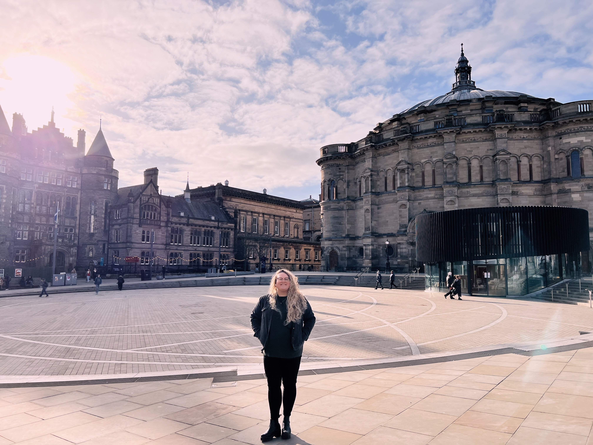
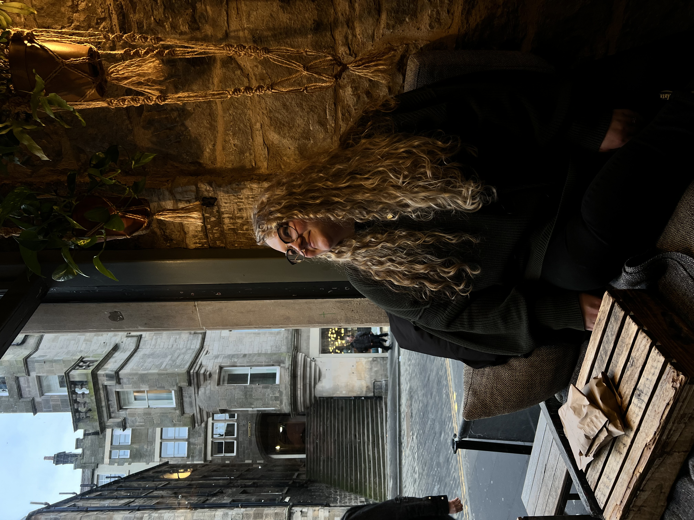
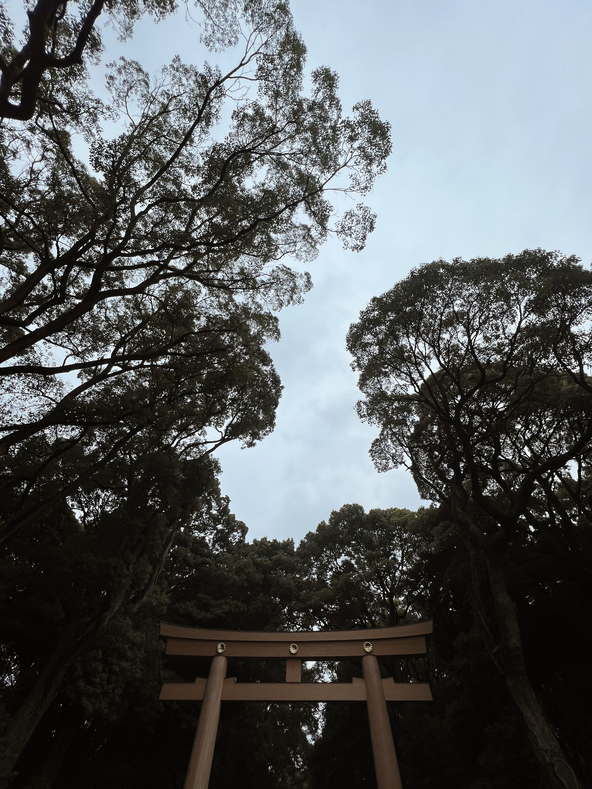

I think learning about APIs was just another level of abstraction to learn. Not only are we learning how to code, but we are learning how the things we will develop work and how they fit into the overall flow of the web.
I think good code has two really big indicators: is it human-readable and is it flexible? If code can be easily understood by other developers, it is easier to work with. If it is flexible, it is easy to add to or take away from, and would in theory develop more easily.
I think good developers are agile, curious, and humble.
I'm not sure yet! I will come back to this question near the end of the program.
I think that the only thing holding me back right now is my limited scope of knowledge. I started coding 5 weeks ago, at the beginning of March 2024. Being in the 5th week of the program encompasses the full range of my knowledge.
I think that I would like to learn more functions of JavaScript, and continue to refine my understanding of functions, variables, and other components.
My 'why' is developing a career in a field I'm interested in, that will allow me to live the kind of life I find fulfilling.
I think the program being more flexible while we're going through a lot of information is helpful, so that we can read and participate as we are able.
Working my job as a teacher while Onboarding was going on was most definitely challenging thing.
Trying to be cognizant of timing and timelines, doing things again and again, and eventually learning when to ask for help.
I think that I'm starting to see how everything comes together, which makes it less scary. Coming in with no real coding experience means that there was just oceans of information. There're still oceans but I think I could name at least one now.
My blog incorporates pictures (which I think would be considered objects?). This question honestly confuses me a little, as our blogs so far don't have any javascript aspects.
I would really like to be better able to organize a website. Making it have a great user experience and good flow would be fantastic. I am going to practice by restructuring this blog!
Right now I'm struggling with finding the balance amongst things, there is just a lot happening all at once with teaching, starting this program, and a general busy season of life. I keep thinking about how nice it will be in 6 months, when I will hopefully have a job and focus on that exclusively.
I tend to really hammer at something until I understand what's happening, almost too much.
I think the best method for getting unstuck is to try and broaden the scope of what you're looking at. Often, problems are symptomatic of a breakdown somewhere else, so it is good to try and think of the bigger picture.
The first week of bootcamp exceeded my expectations in both workload and excitement. We dove right in to an ocean of material!
I am excited to learn more about back end development, as it is honestly the part of web development that is a bit scary to me.
I would say that I am much nerdier than I may appear, and it often surprises people. I'm a big fan of things like:
Most of all, I love traveling and experiencing new cultures (and learning their languages).
Please enjoy a few pictures from the two countries I visited last year in 2023, Scotland and Japan (including one picture of Mount Fuji on a clear day!):
  